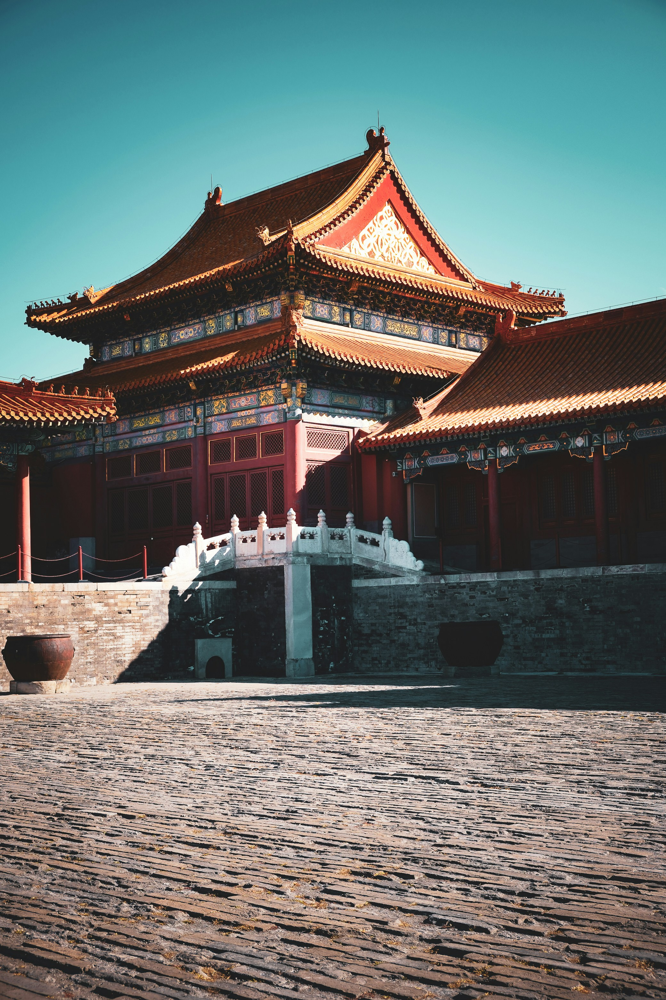
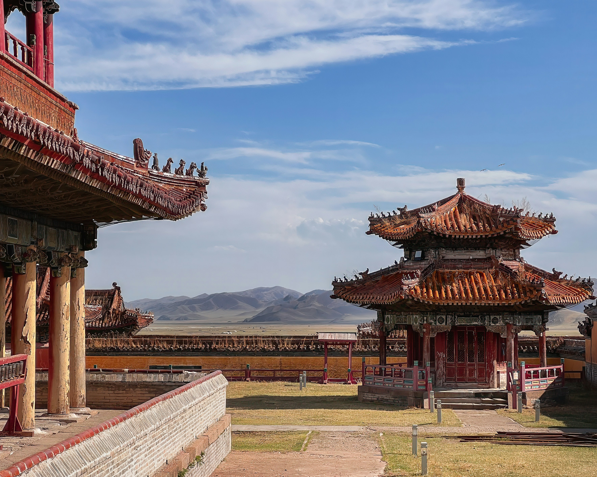
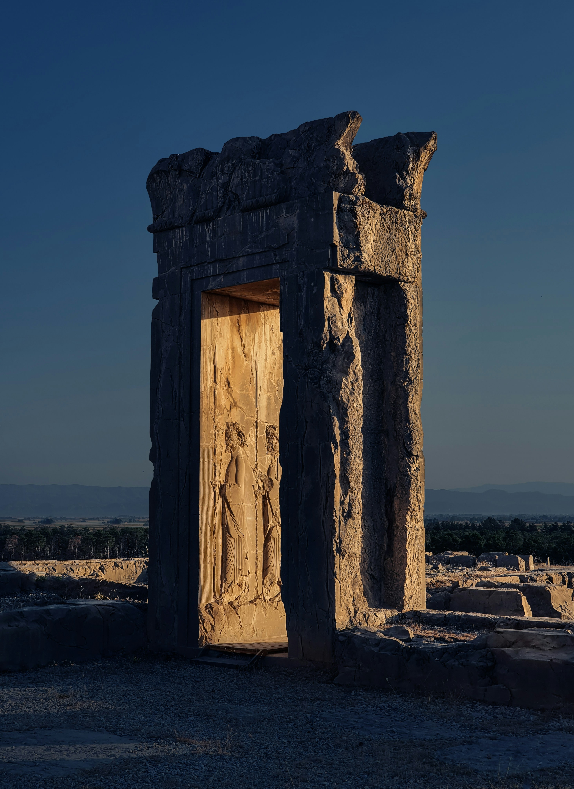

Outros destaques históricos
Dentre todas os saltos tecnológicos, há nações que se destacam ao transformar a inovação em soberania nacional, liderando a economia global e moldando o futuro da sociedade.
-
China e dinastias

O Império Chinês destacou-se pela sua contínua evolução tecnológica e comercial. O comércio, introduzido na Dinastia Han por Shennong, evoluiu da troca direta para sistemas estruturados bilaterais e multilaterais. No campo tecnológico, os chineses revolucionaram a agricultura com a invenção do arado de aiveca (Han), que reduzia a erosão do solo, e expandiram a produção de armas e ferramentas com a metalurgia do ferro (Zhou), impulsionada pelo uso do fole. A difusão do conhecimento foi facilitada pela substituição dos rústicos cadernos de bambu pelo papel na Dinastia Han, enquanto a Dinastia Tang trouxe inovações impressionantes como a xilogravura, mecanismos de relógio e autômatos mecânicos. Uma curiosidade fascinante é a porcelana chinesa: os europeus a chamavam de "ouro branco" e acreditavam na fofoca de que era feita de cascas de ovo enterradas por cem anos, quando na verdade era uma mistura precisa de caulim e feldspato em altíssimas temperaturas.
-
Império Mongol

O Império Mongol representa o ponto central de referência na linha do tempo asiática, dividindo a história da região em períodos pré-mongol, domínio mongol e pós-mongol. O grande marco inicial dessa nação ocorreu no Kurultai de 1206, uma assembleia monumental de tribos nômades onde Temujin conseguiu unificar a estepe e foi coroado com o título de Genghis Khan, o Soberano Universal. A partir desse momento, o império iniciou um período de consolidação que culminaria na Pax Mongólica, uma era de estabilidade que facilitou o contato entre diferentes povos e pavimentou o caminho para as dinâmicas políticas e comerciais que só encontrariam seu desfecho regional com a Queda de Constantinopla.
-
Império Persa
../../assets/icons/logo.svg
O Império Persa construiu uma forte economia baseada no comércio e na integração de seus territórios. Ao estabelecerem uma moeda única, facilitaram a troca de produtos como cevada, uvas, gergelim e linho, transportados pelas boas estradas do Império Aquemênida ou por rotas de comércio marítimo. A engenharia persa era excepcionalmente avançada para a época: na agricultura, criaram os Qanats, que eram engenhosos túneis subterrâneos capazes de trazer água de aquíferos para regiões áridas sem sofrer evaporação. Também foram pioneiros na refrigeração com os Badgirs, torres que captavam brisas e funcionavam como um ar-condicionado rústico. Militarmente, o rei contava com a guarda de elite dos "Imortais", composta por exatos 10.000 soldados; o segredo era que qualquer baixa era reposta no mesmo dia, criando a lenda aterrorizante de que nunca morriam.
-
Império Otomano
O Império Otomano prosperou ao dominar as rotas comerciais que conectavam o Oriente e o Ocidente, transformando cidades como Istambul, Bursa e Edirne em grandes polos de especiarias, seda e cerâmica. Essa economia era sustentada por impostos eficientes e pelo sistema de timar, que concedia terras em troca de serviços civis e militares. Na tecnologia e ciência, os otomanos realizaram grandes feitos: Piri Reis revolucionou a geografia com seus mapas precisos, a medicina adotou o integralismo curativo e preventivo, e o engenheiro Taqi al-Din criou avançados relógios astronômicos mecânicos com sistema de alarme. O poder bélico da nação culminou na Queda de Constantinopla em 1453, evento marcado pelo uso do gigantesco Canhão de Basílica, uma arma tão poderosa e que aquecia tanto que só podia ser disparada sete vezes ao dia para não destruir a si mesma.